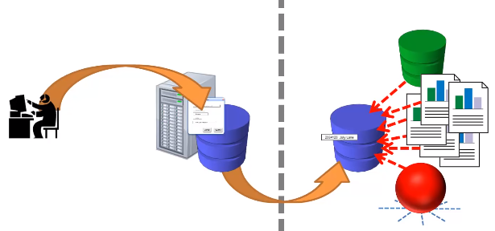
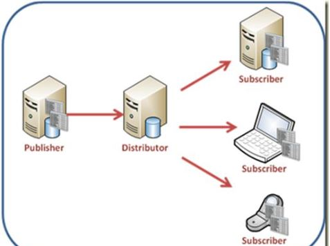
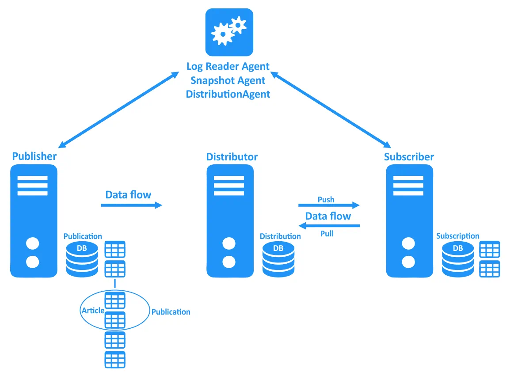

Definition
- A feature that copies and distribute data and database objects from one database to another and keep them synchronized.
- This helps in sharing data across different databases, improving availability, and distributing the load for read operations.
- It supports various types of replication, including Snapshot, Transactional, and Merge Replication, each serving different purposes and scenarios for data synchronization and distribution.
- Replication allows two or more servers to stay "in sync" which means the secondary servers can answer queries and, depending on the setup, actually change data (it will be merged in the sync). You can also use it for local caching, load balancing, etc.
- Does have a small impact on the production database, but because it is extracting as the data is updating, the impact is very small and manageable.
- Replicated database can exist in the same database as the source data, in a different database on the same instance, or in a database on a separate instance or server.
- Can be set up to continuously synchronize the source data with the copied data or set it up to synchronize the data at scheduled intervals.
- Doesn't replace the need for other BI and data integration solutions such as data warehousing. Rather, the replication system is part of a larger picture for delivering your data, and it specifically shields your production system from the burden which these solutions introduce.
- Supports both one-way and bi-directional synchronization, and keeps several datasets in sync with each other.
- Publication, Distribution, and Subscription are logical replication concepts rather than physical objects; they are not referring to database objects or databases.
- The databases that participate in replication are referred to as the publication database, distribution database, and subscription database, depending on the role each plays in the replication context. Each lives on its respective SQL Server instance.
- Replication requires a number of components to work properly.
- Replication includes the replication agents necessary to drive these processes.
- Replication includes few maintenance jobs.
- Includes a Peer-to-Peer Topology Wizard, which allows replication nodes to be managed using a topology viewer.
Advantages
- Performance
- It can be hit with many queries without worrying about the application being slowed down in any way.
- It separates expensive reporting queries from OLTP, keeping the write-intensive OLTP load on one system and the read-intensive reporting load on the other.
- Can be used to copy data to a different machine in order to support ad hoc reporting or to provide a source for an SSAS cube.
- Transactional replication can be set up to transfer data in near real-time to reports. Although SQL Server doesn't offer synchronous replication, there is usually only a short delay for changes in the source data to show up in the replicated data. Latency depends on a lot of factors, but most of the time it is in the range of only a few seconds.
- Automation and Scheduling
- Ability to automate and schedule the copying and distribution of data and database objects from one database or server to another, while ensuring data integrity and consistency.
- It can run replication nightly to provide a data snapshot, to the reporting environment. As a result, reports will contain data from completed days only, rather than containing data from a part of a day. That means it doesn't have to build extra logic into the system to deal with today's incomplete data.
- Backup and HADR strategy
- Can also be used for data archival and HA purposes.
- It can maintain a copy of a complete database on a second server and automatically keep it in sync with the main database. HA standby server and database copy can even be combined with reporting server and database, saving on hardware and licensing costs.
- Others
- Can use both column filters and static row filters in a single publication to narrow the scope of the published data.
- Can even do things such as change the replicated data on the fly or replicate only data inserts and updates, while ignoring deletes.
- Can have two subscriptions of publications in separate databases write to the same database, thereby collecting data from different sources into one place.
- A scenario in which replication is often utilized is that of a traveling sales force. Sales people usually carry their own laptops, which can contain important company data, and they often update that data throughout the day. The new information is then fed into the database back at headquarters. Because the laptops are often not connected, a continuous replication setup is not an option. What further complicates the issue is that the same data can sometimes be updated in different places, creating conflicts that must be resolved. With Merge Replication, SQL Server provides a replication topology that was built for exactly this type of scenario.
- Allows replication of data to and from other DBMSs such as Oracle.

Process Flow

- Replication begins at the server known as the publisher.
- The publisher compiles and arranges data into articles, and one or more articles are included in a publication.
- To get data to subscribers, it needs to employ a distributor. The subscribers can choose to have the distributor deliver the publication to them, or they can go to the distributor to pick up the publication. A publisher might also be a distributor.

Publisher
- A SQL Server instance that makes a publication available for replication.
- Doesn't actually have an active role in a replication setup. After the publication is defined, the Distributor and sometimes the Subscriber do all the heavy lifting.
- Can define one or more publications on a Publisher.
- Linked to a single Distributor.
- Those publications can include any combination of the replication types.
Publication / Publication Database
- Any database that contains objects designated as articles.
- When a publication is set up a on a database, SQL Server modifies the inner workings of that database and creates several replication-related objects.
- A set of articles made available as a unit for others to subscribe to.
- All publications on a single Publisher, regardless of their type, must use the same Distributor and distribution database.
- Protected against being dropped.
Articles
- A collection of data that exists as part of a replication publication.
- Needs to be defined for each SQL Server object that should be replicated.
- Each corresponds to a single SQL Server object in the Publication database.
- Each is defined to be part of exactly one publication.
- All articles within a single publication must reside in the same database. However, articles in multiple publications can map to the same database object.
- Article's properties determine whether that article contains the entire object or a filtered subset of its parts.
-
Most of the objects are schema-only articles.
That means that only the object's definition is replicated to the Subscriber, but nothing else.
Transactional replication, for example, allows procedure executions to be replicated.
This is not possible with Merge Replication.
The only article type that allows for more than just the definition to be replicated is the table; a table article will replicate schema as well as data changes.
The main reason for this restriction is the way Merge Replication works.
Transactional Replication reads the transaction log and therefore has access to a detailed list of every action that happened in that database in chronological order. Merge Replication relies instead on a series of table triggers to capture data changes. It also uses object-level triggers that can capture schema changes of those objects but no other interaction with them, such as stored procedure executions. While this approach has limitations in some areas, it is also more flexible in other places. For example, you can replicate tables that do not contain a primary key, something not possible with Transactional Replication. The options available for configuring an article depend on the associated object type: - A table article, by default, replicates the data in the table as well as any schema changes to the table. However, there is an option to replicate only the data and ignore changes to the table schema.
- For a stored procedure, choose to replicate the procedure definition or the definition and each execution. Replicating an execution in this context means that each time the procedure runs on the Publisher, it will be called with the same parameters on each Subscriber. Data changes to underlying tables that happen during the execution of the procedure will not be replicated separately. This can be a great performance benefit because potentially a lot less data has to be moved.
- Views and Functions always replicate the schema only while Indexed Views are schema only by default. However, they can get replicated as tables; that means on the Subscriber side a table is created instead of a View. All schema changes to the indexed view as well as changes to the underlying data will be applied to that table.
Distributor
- Core component in a SQL Server replication setup.
- Controls and executes the processes that move the data from one server to another.
- Depending on the replication setup, it might also be responsible for notifying the Subscribers that have subscribed to a publication that an article has changed.
- Information about the changes is stored in the distribution database until all Subscribers have been notified or the retention period has expired.
- It includes the distribution database, snapshot folder, and replication agents are specific components that important to the Distributor and replication in general.
- It also stores metadata about publications and subscriptions in the distribution database.
- Can be configured on a SQL Server instance separate from the Publisher, but often the same instance takes the role of the Publisher and the Distributor (local distribution model).
- Must be available when other components are set up.
- Has at least one distribution database. It can hold more than one distribution database; however, all publications defined on a single Publisher must use the same distribution database as the selection of which distribution database to use is a Publisher-wide setting.
Distribution / Distribution Database
- Contains a number of objects that store replication metadata as well as replicated data.
- Multiple distribution databases can be installed on a Distributor but contention can be reduced if each Publisher uses a separate distribution database.
- Contains metadata about a Publisher's publications and their articles.
- Contains metadata about the progress and state of the replication process.
- In the case of Transactional Replication, the database also contains any T-SQL commands that were executed on the Publisher and that need to be replicated. For each command, all the data necessary to re-execute that command is also stored in this database. Because of the amount of data that the distribution database must store, it can become quite large. The size required for the distribution database is dependent on many factors:
- If the procedure itself is published, the data needed to re-execute it on the Subscriber will be stored in the distribution database. If the procedure itself is not published, or if executed as ad hoc by the application, each INSERT statement with all the column values will be stored. This approach requires a lot more space in the distribution database than the stored procedure, although both approaches accomplish the same thing.
- That means the distribution database size is affected by the number of statements, their frequency, and the type of statements that are executed by an application to insert or update data.
- Other factors affecting the size of the distribution database are the time it takes to get the data to the Subscribers (latency) as well as the different retention times.
- A replication setup often follows the local distributor model. This model is easier to implement than other models; however, it takes a measurable toll on the Publisher's performance. If the impact becomes too great, move the distribution to its own server. With the Distributor and all its processes on a separate machine, the impact on the Publisher is minimal.
Snapshot
- A copy of the object definitions and the data stored in those objects.
- Depending on the size of the tables and the network speed, generating a snapshot can take several hours.
- Needed only when adding a new Subscriber to a publication or when an existing Subscriber needs to be resynchronized, such as when it has been disconnected for too long.
Snapshot Folder
- Because the snapshot folder lies at the heart of a snapshot replication, it's important to set it up correctly and plan for enough space on the drive.
- Used by Snapshot Replication to hold a snapshot of the replicated tables. Every time Snapshot Replication runs, a snapshot of all the replicated tables is saved to the snapshot folder. This is accomplished by using the SQL Server bcp utility.
- Windows account that is used to execute the Snapshot Agent needs to have write permission on this folder, and most other agents need to be granted read access.
- Most processes that access the snapshot folder run on the Distributor. For this reason (and to support both push and pull subscriptions), create a network share on the Distributor itself. That gives direct and fast access to the local processes while also allowing for scenarios such as subscriptions that require remote access.
Subscriber
- A SQL Server instance that has a subscription defined in one of its databases (subscription database) to which the published changes are applied.
- Subscribes to a publication for each SQL Server instance.
- Receives changes to a published article through that publication.
- Does not necessarily play an active role in the replication process.
- Depending on the settings selected during replication setup, it might receive the data passively.
Subscription / Subscription Database
- A database that is the target of a replication subscription.
- As in the case of the publication database, SQL Server modifies the subscription database during the first initialization. The most obvious change is the addition of a few replication-related objects.
- Main purpose is to specify the database that the recorded changes will be applied to.
- Although a publication without a subscription can be defined, the publication can live up to its potential only if there is a subscription in place. In fact, you can implement multiple subscriptions for a single publication.
- Each subscription creates a link, or contract, between one Publication and one Subscriber.
- SQL Server doesn't prevent a subscription database from being dropped.
- There are two types of subscriptions: Push and Pull Subscription
Push and Pull Subscription
| Push | Pull | |
| How data moves | Distributor directly updates the data in the Subscriber database. | Subscriber asks the Distributor regularly if any new changes are available, and then updates the data in the subscription database itself. |
| Where agent runs | Distribution/Merge Agent is run at the distributor. | Distribution/Merge Agent is executed at the subscriber. |
| Permission Set | Complex | Simple |
| Be a member of the db_owner database role in the subscription database. | ||
| Be added to the PAL of the publication. | ||
| Use account with sysadmin privileges to simplify matters. | ||
| Account Impersonation | Connection to the distribution database is therefore made by impersonating the account the agent runs under. For the connection to the subscription database, you can choose either to use impersonation or to provide a SQL Server login. | Connection to the subscription database is fixed to use process account impersonation; however, you can choose between impersonation and a SQL Server login for the connection to the distribution database. |
| Best Practice | Use if you need the data to move from the Publisher to the Subscriber in the shortest timeframe possible, in a continuous manner. This is also by far the most common scenario in Transactional Replication. | Use to give the Subscriber full control over when the data flow occurs. For example, the Subscriber might not always be connected to the network, or the data should not change on the Subscriber until a given process has completed. |